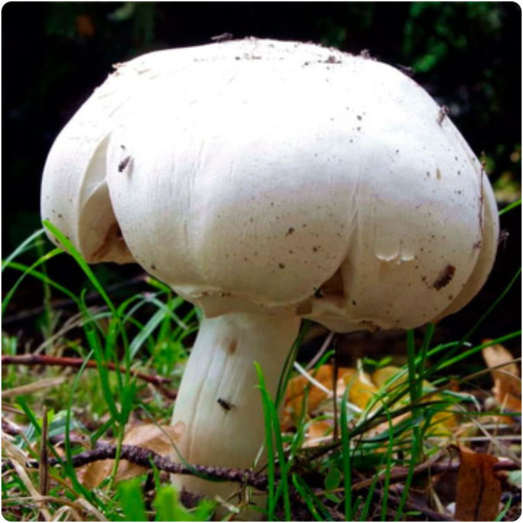

| В каких случаях можно есть темные шампиньоны? | Когда собирают вешенки в природе и в домашних условиях? | Как выращивают шампиньоны в промышленных масштабах? | Когда грибники начинают собирать грибы в лесу? |
| Многие считают, что если шампиньоны темные, то они не пригодные в пищу. Разберем особенности этих грибов и случаи когда они не пригодны к употреблению. | Лесная вешенка намного полезнее и вкуснее промышленной. Когда и как собирать вешенки, а также какие есть разновидности и как их не спутать с несъедобными. | Шампиньоны – любимый продукт многих. Для собственного бизнеса необходимо знать, как выращивают шампиньоны в промышленных масштабах. | На территории России произрастает более 3000 видов грибов. О том, какие и когда грибы можно собирать в лесу, что необходимо иметь при себе и прочее. |
Грибы
Грибники – это почетные и опытные люди, которые собирают грибы, как для своих нужд, так и на продажу. Что же делать, если лесополоса далеко, а грибочков очень хочется? Попробуйте освоить тонкости их выращивания на своем участке. Вся полезная информация о выборе мицелия, правилам организации помещения и многое другое собрано в данном разделе. Грибники тоже найдут здесь много интересного.
|  | |||
| Как отличить ложные шампиньоны от настоящих? | Где в России растут трюфели и как их найти? | Что можно сделать с белым грибом. 9 интересных вариантов | Особенности королевских шампиньонов и технология их выращивания |
| Есть вероятность перепутать шампиньоны с их ядовитыми аналогами. Поэтому давайте разберемся, как отличить шампиньоны от ложного шампиньона. | Трюфель – дорогостоящий вид грибов, популярный в европе. Растут ли трюфели в лесах России и как их найти. Об этом наша сегодняшняя статья. | В нашем материале мы собрали информацию о том, что можно сделать с белым грибом, как заготовить на зиму и какие блюда приготовить. | Шампиньон – один из наиболее пользующихся спросом гриб. Чем же королевские шампиньоны отличаются от обычных и как их выращивать дома? |